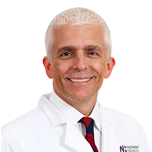
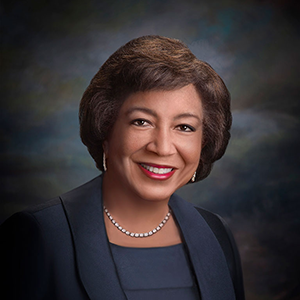
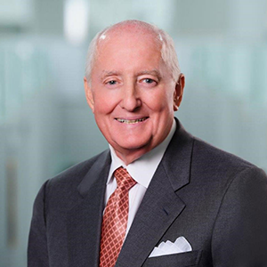

About the Panel Members
The President’s Cancer Panel was established in 1971 by the National Cancer Act (P.L. 92-218). Members are appointed by the President of the United States and charged with monitoring the progress of the National Cancer Program. The following members of the President’s Cancer Panel planned and executed a series of workshops in 2020–2021 on cancer screening. In February 2022, a report was submitted to the White House with findings and recommendations to promote equity in and access to cancer screening.
For information on current members and activities, visit the President’s Cancer Panel’s website.

John P. Williams, MD, FACS
Breast Cancer Surgeon
Medical Director
Breast Cancer School for Patients
Clinical Professor
Institute for Biohealth Innovation
George Mason University
Gainesville, VA
Dr. Williams is a breast cancer surgeon and patient education advocate. He founded and is medical director of the Breast Cancer School for Patients, an online video-based education platform. His policy interests focus on improving cancer outcomes and disparities by promoting a transparent and patient-focused national healthcare system.
He received an undergraduate degree in psychology with distinction from Duke University and his medical degree from UNC School of Medicine. Dr. Williams then completed his surgery residency at Baylor College of Medicine with Dr. Michael E. DeBakey. He is a clinical faculty member at the Institute for Biohealth Innovation at George Mason University and founded the Novant-UVA Breast Center in 2009. Dr. Williams practices breast surgery in Northern Virginia.

Edith P. Mitchell, MD, MACP, FCPP, FRCP (London)
Brigadier General, United States Air Force, Retired
116th President, National Medical Association
Clinical Professor of Medicine and Medical Oncology
Department of Medical Oncology
Director, Center to Eliminate Health Disparities
Associate Director of Diversity Affairs
Sidney Kimmel Cancer Center
Thomas Jefferson University
Philadelphia, PA
Dr. Mitchell is Clinical Professor of Medicine and Medical Oncology in the Department of Medical Oncology, Director of the Center to Eliminate Health Disparities, and Associate Director of Diversity Affairs at the Sidney Kimmel Cancer Center at Thomas Jefferson University. She is a retired Brigadier General, the first female physician to attain this rank in the history of the U.S. Air Force. Dr. Mitchell was the 116th President of the National Medical Association. Her research focuses on breast, colorectal, and pancreatic cancers and other gastrointestinal malignancies and involves new drug evaluation and chemotherapy, development of new therapeutic regimens, chemo-radiation strategies for combined modality therapy, patient selection criteria, supportive care, and disparities in cancer. She is a Principal Investigator for a National Cancer Institute (NCI) Lead Academic Participating Site grant and received the 2018 Jefferson Health Achievement Award in Medicine. Dr. Mitchell currently serves on the National Institutes of Health Council of Councils and previously served on the NCI Clinical Trials and Translational Research Advisory Committee (CTAC) and the NCI Blue Ribbon Panel.

Robert A. Ingram
General Partner
Hatteras Venture Partners
Durham, NC
Mr. Ingram is a General Partner at Hatteras Venture Partners, a venture capital firm that invests in early-stage life science companies. Prior to joining Hatteras, he was Chief Executive Officer and Chairman of Glaxo/Wellcome and co-led the merger and integration that formed GlaxoSmithKline. In 2013, Mr. Ingram received the NACD B. Kenneth West Lifetime Achievement Award from the National Association of Corporate Directors.
At the request of U.S. President George H.W. Bush, Mr. Ingram formed and chaired the CEO Roundtable on Cancer. In 2006, he was appointed by President George W. Bush to the National Cancer Advisory Board. In 2014 he received the North Carolina Award for public service, the highest civilian honor the state can bestow on an individual. Mr. Ingram currently serves on the boards of the Research Triangle Foundation of North Carolina and the Research Triangle Institute, is Chairman of the GlaxoSmithKline Foundation, and is a member of the Advisory Council of the Congressional Task Force on Biomedical Research and Innovation.
Mr. Ingram is a graduate of Eastern Illinois University.